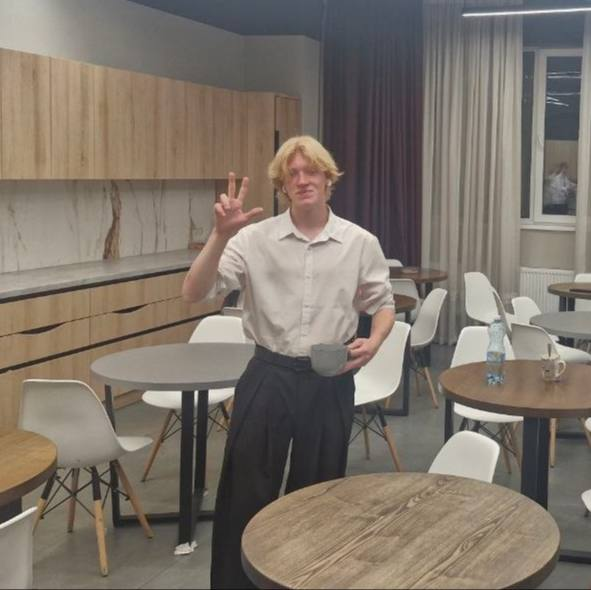

Богдан Кіналь
Студент 4 курсу спеціальності «Комп'ютерні науки». Навчаюсь створювати програмне забезпечення й визначаю, де саме в цьому стеку хочу залишитися.
- Статус
- студент 4 курсу
- Напрям
- Комп'ютерні науки
- Місто
- Дніпро
- GitHub
- @kinalbohdan
Про мене
Я студент спеціальності «Комп'ютерні науки», зараз навчаюсь на четвертому курсі. Більшість часу йде на навчання, власні проєкти та поступове перетворення цієї сторінки на повноцінний персональний сайт.
Мене приваблює інформатика тим, що подобається розбиратися, як усе влаштовано, і перетворювати ідеї на робочий код. Особливо подобається розв'язувати практичні задачі за допомогою програмування, працювати з базами даних і створювати застосунки, які корисні та зручні у використанні.
Поза навчанням цікавлюсь новими технологіями, спортом і власними програмістськими проєктами.
- СТАТУС4 курс, бакалаврат
- НАПРЯМКомп'ютерні науки
- ФІЛІЯДніпро
- КАРТКАgithub.com/kinalbohdan
Над чим працюю
Розробка ПЗ
Працюю з Python, PHP, JavaScript та SQL. Маю досвід з алгоритмами, базами даних, Git та створенням програмних проєктів у межах навчання.
Веброзробка
Працюю з HTML, CSS, JavaScript, PHP та MySQL, зокрема створюю вебзастосунки з інтеграцією баз даних. Також маю досвід з Django та архітектурою MTV.
Дані та розв'язання задач
Цікавлюсь аналізом даних, статистикою та оптимізацією. Подобається працювати з даними, порівнювати різні підходи та знаходити ефективні рішення практичних задач.
Освіта
| Період | Запис |
|---|---|
| 2026 |
Бакалавр комп'ютерних наукВища освіта за спеціальністю «Комп'ютерні науки» — наразі навчаюсь на завершальному, четвертому курсі програми. |
| раніше |
Середня освітаЗакінчив 11 класів школи. |
Будую зараз
kinalbohdan.github.io
Ця сторінка — персональний сайт, розміщений на GitHub Pages. Слідкуйте за розробкою: kinalbohdan.github.io.
Контакти
Найшвидший спосіб зв'язатися зі мною — електронна пошта.